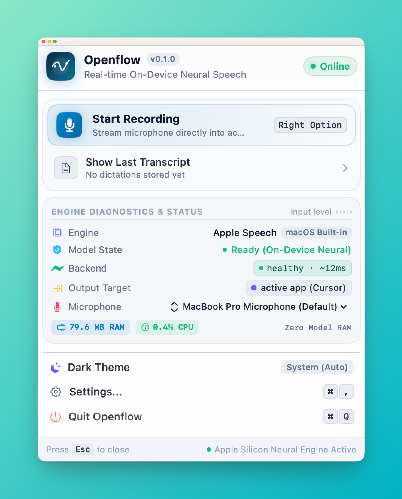
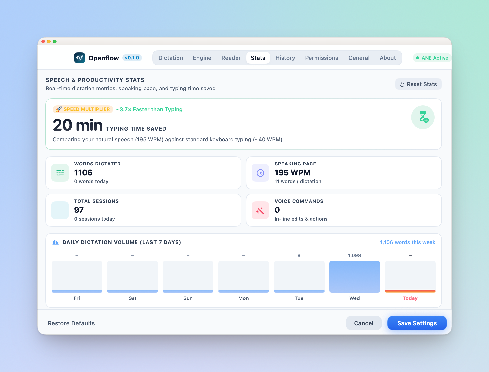
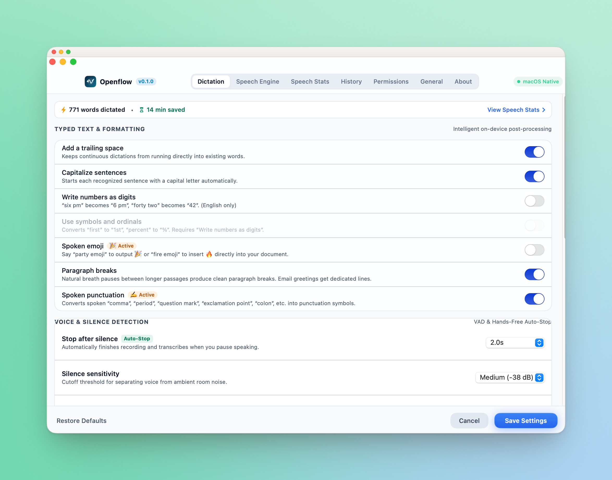
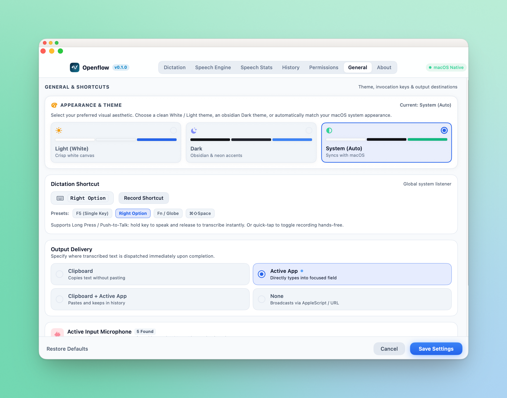

Speak at the speed of thought.
Zero cloud. Zero lag.
Dictate 3x faster than typing directly into Cursor, Slack, Notion, Notes, or your terminal. Powered entirely on-device by WhisperKit CoreML and Apple Neural Engine.
curl -fsSL https://raw.githubusercontent.com/abhilashpanda04/Openflow/main/install.sh | bash

Refactor the entire authentication handler into an async CoreML pipeline. Use native Swift concurrency and ensure we catch all network timeouts—
Everything you need to write without typing
Openflow combines Apple Silicon hardware acceleration with smart audio preprocessing to deliver an effortless dictation experience.
Native WhisperKit CoreML
Runs state-of-the-art OpenAI Whisper models directly on Apple Silicon Neural Engine (ANE) and GPU. Zero Python runtime, zero Docker overhead, and zero network dependency.
In-Line Voice Actions
Say "scratch that" to discard dictation instantly. Use "urgent all caps that" to format words, or dispatch "select all", "new paragraph", and "undo" seamlessly.
Apple Intelligence Ready
Integrated with macOS 15.1+ Apple Intelligence Writing Tools. Invoke proofreading, tone shifts (Professional, Friendly, Concise), or summarization directly with voice triggers.
VAD & Silence Trimming
Smart Voice Activity Detection automatically stops recording when you pause (1s to 5s). Leading and trailing silence are trimmed to eliminate hallucinated repeats.
Native Audio Chimes
Dispatches native Siri acoustic feedback asynchronously when recording starts, completes, or cancels. Gives you clear audio cues without interrupting typing or microphone capture.
Universal Text Injection
Works universally in any macOS application with zero configuration. Direct keyboard event synthesis pastes your text into Cursor, Xcode, Slack, Google Docs, or Chrome.
Designed to look like a native macOS app
Crafted with SwiftUI to follow Apple Human Interface Guidelines, supporting both dark obsidian and crisp light themes.

Real-time metrics: words dictated, 14+ minutes saved today, 300 WPM pace, weekly volume chart, and engine distribution.

Granular formatting controls: spoken emoji, spoken punctuation, trailing space handling, and configurable VAD auto-stop thresholds.

Select between Obsidian Dark, Crisp White, or System Auto. Configure single-key triggers like Right Option, Fn/Globe, or F5.
Why choose Openflow over alternatives?
Comparing Openflow with built-in macOS dictation and cloud-based subscription dictation apps.
| Feature |
Openflow
|
macOS Built-in Dictation | Cloud Dictation (Wispr / Superwhisper) |
|---|---|---|---|
| On-Device Neural Engine (CoreML) |
check_circle
Yes (WhisperKit)
|
Partial / Basic | No (Requires Cloud API) |
| Privacy & Zero Telemetry |
check_circle
100% Offline
|
Sends telemetry to Apple | Uploads voice to third-party servers |
| Technical & Code Dictation Accuracy |
check_circle
High (Whisper Models)
|
Frequently misinterprets code |
check_circle
High
|
| In-Line Voice Actions (“scratch that”) |
check_circle
Built-in Engine
|
None | Limited |
| Silence Trimming & VAD Auto-Stop |
check_circle
Built-in (1s-5s)
|
None | Subscription only |
| Price & Licensing |
check_circle
100% Free & Open Source
|
Free (Bundled) | $10 – $20 / month |
Up and running in 30 seconds
No complicated terminal setups. Download, install, and start speaking.
One-Line Terminal Install
Run curl -fsSL ... | bash or download the signed Openflow.dmg directly from GitHub Releases.
Drag to Applications
Open the DMG, drag the Openflow app icon into your Mac's Applications folder, and launch it.
Hold Key & Dictate
Grant microphone & accessibility permissions. Press Right ⌥ or ⌘⇧Space and speak anywhere!
Got questions? We've got answers.
Does my voice audio leave my computer? expand_more
Which Mac models are supported? expand_more
Can I customize the global shortcut? expand_more
What voice commands are supported? expand_more
VoiceCommandEngine. You can say “scratch that” to cancel dictation, “urgent all caps that” for uppercase, “select all”, “copy”, “paste”, “delete line”, “new line”, and “new paragraph”.
Is Openflow really free and open-source? expand_more
Ready to speak at 300 WPM?
Download Openflow today and turn speech into your fastest input method on macOS.